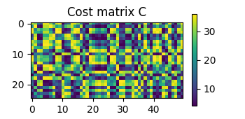
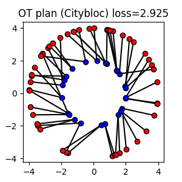
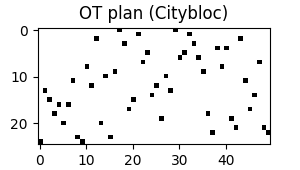
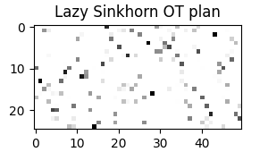
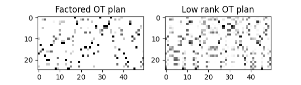

Note
Go to the end to download the full example code.
Quickstart Guide
Note
Example added in release: 0.9.6
Quickstart guide to the POT toolbox.
For better readability, only the use of POT is provided and the plotting code with matplotlib is hidden (but is available in the source file of the example).
Note
We use here the unified API of POT which is more flexible and allows to solve a wider range of problems with just a few functions. The classical API is still available (the unified API one is a convenient wrapper around the classical one) and we provide pointers to the classical API when needed.
# Author: Remi Flamary
#
# License: MIT License
# sphinx_gallery_thumbnail_number = 4
# Import necessary libraries
import numpy as np
import pylab as pl
import ot
2D data example
We first generate two sets of samples in 2D that 25 and 50 samples respectively located on circles. The weights of the samples are uniform.
# Problem size
n1 = 25
n2 = 50
# Generate random data
np.random.seed(0)
a = ot.utils.unif(n1) # weights of points in the source domain
b = ot.utils.unif(n2) # weights of points in the target domain
x1 = np.random.randn(n1, 2)
x1 /= np.sqrt(np.sum(x1**2, 1, keepdims=True)) / 2
x2 = np.random.randn(n2, 2)
x2 /= np.sqrt(np.sum(x2**2, 1, keepdims=True)) / 4
# Compute the cost matrix
C = ot.dist(x1, x2) # Squared Euclidean cost matrix by default
- 
Text(0.5, 1.0, 'Cost matrix C')
Solving exact Optimal Transport
Solve the Optimal Transport problem between the samples
The ot.solve_sample() function can be used to solve the Optimal Transport problem
between two sets of samples. The function takes as its two first arguments the
positions of the source and target samples, and returns an ot.utils.OTResult object.
OT loss = 5.292
The figure above shows the Optimal Transport plan between the source and target samples. The color intensity represents the amount of mass transported between the samples. The dual potentials of the OT problem are also shown.
The weights of the samples in the source and target domains a and
b are given to the function. If not provided, the weights are assumed
to be uniform See ot.solve_sample() for more details.
The ot.utils.OTResult object contains the following attributes:
value: the value of the OT problemplan: the OT matrixpotentials: Dual potentials of the OT problemlog: log dictionary of the solver
The OT matrix \(P\) is a matrix of size (n1, n2) where
P[i,j] is the amount of mass
transported from x1[i] to x2[j].
The OT loss is the sum of the element-wise product of the OT matrix and the cost matrix taken by default as the Squared Euclidean distance.
Optimal Transport problem with a custom cost matrix
The cost matrix can be customized by passing it to the more general
ot.solve() function. The cost matrix should be a matrix of size
(n1, n2) where C[i,j] is the cost of transporting mass from
x1[i] to x2[j].
In this example, we use the Citybloc distance as the cost matrix.
# Compute the cost matrix
C_city = ot.dist(x1, x2, metric="cityblock")
# Solve the OT problem with the custom cost matrix
sol = ot.solve(C_city)
# the parameters a and b are not provided so uniform weights are assumed
P_city = sol.plan
# on empirical data the same can be done with ot.solve_sample :
# sol = ot.solve_sample(x1, x2, metric='cityblock')
# Compute the OT loss (equivalent to ot.solve(C).value)
loss_city = sol.value # same as np.sum(P_city * C)
- 
- 
Note that we show here how to solve the OT problem with a custom cost matrix
with the more general ot.solve() function.
But the same can be done with the ot.solve_sample() function by passing
metric='cityblock' as argument.
The cost matrix can be computed with the ot.dist() function which
computes the pairwise distance between two sets of samples or can be provided
directly as a matrix by the user when no samples are available.
Sinkhorn and Regularized OT
Entropic OT with Sinkhorn algorithm
# Solve the Sinkhorn problem (just add reg parameter value)
sol = ot.solve_sample(x1, x2, a, b, reg=1e-1)
# get the OT plan and loss
P_sink = sol.plan
loss_sink = sol.value # objective value of the Sinkhorn problem (incl. entropy)
loss_sink_linear = sol.value_linear # np.sum(P_sink * C) linear part of loss
/home/circleci/project/ot/bregman/_sinkhorn.py:903: UserWarning: Sinkhorn did not converge. You might want to increase the number of iterations `numItermax` or the regularization parameter `reg`.
warnings.warn(
The Sinkhorn algorithm solves the Entropic Regularized OT problem. The
regularization strength can be controlled with the reg parameter.
The Sinkhorn algorithm can be faster than the exact OT solver for large
regularization strength but the solution is only an approximation of the
exact OT problem and the OT plan is not sparse.
Quadratic Regularized OT
We plot above the OT plans obtained with different regularizations. The quadratic regularization is another common choice for regularized OT and preserves the sparsity of the OT plan.
Solve the Regularized OT problem with user-defined regularization
Note
The examples above use the unified API of POT. The classic API is still available
and and the entropic OT plan and loss can be computed with the
ot.sinkhorn() # and ot.sinkhorn2() functions as below:
Gs = ot.sinkhorn(a, b, C, reg=1e-1)
loss_sink = ot.sinkhorn2(a, b, C, reg=1e-1)
For quadratic regularization, the ot.smooth.smooth_ot_dual() function
can be used to compute the solution of the regularized OT problem. For
user-defined regularization, the ot.optim.cg() function can be used
to solve the regularized OT problem with Conditional Gradient algorithm.
Unbalanced and Partial OT
Unbalanced Optimal Transport
Unbalanced OT relaxes the marginal constraints and allows for the source and
target total weights to be different. The ot.solve_sample() function can be
used to solve the unbalanced OT problem by setting the marginal penalization
unbalanced parameter to a positive value.
# Solve the unbalanced OT problem with KL penalization
P_unb_kl = ot.solve_sample(x1, x2, a, b, unbalanced=5e-2).plan
# Unbalanced with KL penalization ad KL regularization
P_unb_kl_reg = ot.solve_sample(
x1, x2, a, b, unbalanced=5e-2, reg=1e-1
).plan # also regularized
# Unbalanced with L2 penalization
P_unb_l2 = ot.solve_sample(x1, x2, a, b, unbalanced=7e1, unbalanced_type="L2").plan
Note
Solving the unbalanced OT problem with the classic API can be done with the
ot.unbalanced.sinkhorn_unbalanced() function as below:
G_unb_kl = ot.unbalanced.sinkhorn_unbalanced(a, b, C, eps=reg, alpha=unbalanced)
Partial Optimal Transport
# Solve the Unbalanced OT problem with TV penalization (equivalent)
P_part_pen = ot.solve_sample(x1, x2, a, b, unbalanced=3, unbalanced_type="TV").plan
# Solve the Partial OT problem with mass constraints (only classic API)
P_part_const = ot.partial.partial_wasserstein(a, b, C, m=0.5) # 50% mass transported
Gromov-Wasserstein and Fused Gromov-Wasserstein
Gromov-Wasserstein and Entropic GW
The Gromov-Wasserstein distance is a similarity measure between metric measure spaces. So it does not require the samples to be in the same space.
# Define the metric cost matrices in each spaces
C1 = ot.dist(x1, x1, metric="sqeuclidean")
C2 = ot.dist(x2, x2, metric="sqeuclidean")
C1 /= C1.max()
C2 /= C2.max()
# Solve the Gromov-Wasserstein problem
sol_gw = ot.solve_gromov(C1, C2, a=a, b=b)
P_gw = sol_gw.plan
loss_gw = sol_gw.value # quadratic + reg if reg>0
loss_gw_quad = sol_gw.value_quad # quadratic part of loss
# Solve the Entropic Gromov-Wasserstein problem
P_egw = ot.solve_gromov(C1, C2, a=a, b=b, reg=1e-2).plan
/home/circleci/project/ot/bregman/_sinkhorn.py:667: UserWarning: Sinkhorn did not converge. You might want to increase the number of iterations `numItermax` or the regularization parameter `reg`.
warnings.warn(
Note
The Gromov-Wasserstein problem can be solved with the classic API using the
ot.gromov.gromov_wasserstein() function and the Entropic
Gromov-Wasserstein problem can be solved with the
ot.gromov.entropic_gromov_wasserstein() function.
Fused Gromov-Wasserstein
# Cost matrix
M = C / np.max(C)
# Solve FGW problem with alpha=0.1
sol = ot.solve_gromov(C1, C2, M, a=a, b=b, alpha=0.1)
P_fgw = sol.plan
loss_fgw = sol.value
loss_fgw_linear = sol.value_linear # linear part of loss (wrt M)
loss_fgw_quad = sol.value_quad # quadratic part of loss (wrt C1 and C2)
# Solve entropic FGW problem with alpha=0.1
P_efgw = ot.solve_gromov(C1, C2, M, a=a, b=b, alpha=0.1, reg=1e-3).plan
Note
The Fused Gromov-Wasserstein problem can be solved with the classic API using
the ot.gromov.fused_gromov_wasserstein() function and the Entropic
Fused Gromov-Wasserstein problem can be solved with the
ot.gromov.entropic_fused_gromov_wasserstein() function.
P_fgw = ot.gromov.fused_gromov_wasserstein(C1, C2, M, a, b, alpha=0.1)
P_efgw = ot.gromov.entropic_fused_gromov_wasserstein(C1, C2, M, a, b, alpha=0.1, epsilon=reg)
loss_fgw = ot.gromov.fused_gromov_wasserstein2(C1, C2, M, a, b, alpha=0.1)
loss_efgw = ot.gromov.entropic_fused_gromov_wasserstein2(C1, C2, M, a, b, alpha=0.1, epsilon=reg)
Large scale OT
We discuss here strategies to solve large scale OT problems using approximations of the exact OT problem.
Large scale Sinkhorn
When having samples with a large number of points, the Sinkhorn algorithm can be implemented in a Lazy version which is more memory efficient and avoids the computation of the \(n \times m\) cost matrix.
POT provides two implementation of the lazy Sinkhorn algorithm that return their
results in a lazy form of type ot.utils.LazyTensor. This object can be
used to compute the loss or the OT plan in a lazy way or to recover its values
in a dense form.
# Solve the Sinkhorn problem in a lazy way
sol = ot.solve_sample(x1, x2, a, b, reg=1e-1, lazy=True)
# Solve the sinkhoorn in a lazy way with geomloss
sol_geo = ot.solve_sample(x1, x2, a, b, reg=1e-1, method="geomloss", lazy=True)
# get the OT lazy plan and loss
P_sink_lazy = sol.lazy_plan
# recover values for Lazy plan
P12 = P_sink_lazy[1, 2]
P1dots = P_sink_lazy[1, :]
# convert to dense matrix !!warning this can be memory consuming
P_sink_lazy_dense = P_sink_lazy[:]
- 
/home/circleci/project/ot/bregman/_empirical.py:253: UserWarning: Sinkhorn did not converge. You might want to increase the number of iterations `numItermax` or the regularization parameter `reg`.
warnings.warn(
[KeOps] Generating code for Max_SumShiftExpWeight_Reduction reduction (with parameters 0) of formula [c-1/2*(d*Sum((a-b)**2)),1] with a=Var(0,2,0), b=Var(1,2,1), c=Var(2,1,1), d=Var(3,1,2) ... OK
[pyKeOps] Compiling pykeops cpp 9534d93517 module ... OK
Note
The lazy Sinkhorn algorithm can be found in the classic API with the
ot.bregman.empirical_sinkhorn() function with parameter
lazy=True. Similarly the geoloss implementation is available
with the ot.bregman.empirical_sinkhorn2_geomloss().
the first example shows how to solve the Sinkhorn problem in a lazy way with the default POT implementation. The second example shows how to solve the Sinkhorn problem in a lazy way with the PyKeops/Geomloss implementation that provides a very efficient way to solve large scale problems on low dimensionality samples.
Factored and Low rank OT
The Sinkhorn algorithm can be implemented in a low rank version that approximates the OT plan with a low rank matrix. This can be useful to accelerate the computation of the OT plan for large scale problems. A similar non-regularized version of low rank factorization is also available.
- 
Note
The factored OT problem can be solved with the classic API using the
ot.factored.factored_optimal_transport() function and the low rank
OT problem can be solved with the ot.lowrank.lowrank_sinkhorn() function.
Gaussian OT with Bures-Wasserstein
The Gaussian Wasserstein or Bures-Wasserstein distance is the Wasserstein distance between Gaussian distributions. It can be used as an approximation of the Wasserstein distance between empirical distributions by estimating the covariance matrices of the samples.
Exact OT loss = 5.292
Bures-Wasserstein distance = 4.558
Note
The Gaussian Wasserstein problem can be solved with the classic API using the
ot.gaussian.empirical_bures_wasserstein_distance() function.
Comparing all OT plans
The figure below shows all the OT plans computed in this example. The color intensity represents the amount of mass transported between the samples.
# plot all plans
Total running time of the script: (0 minutes 17.547 seconds)